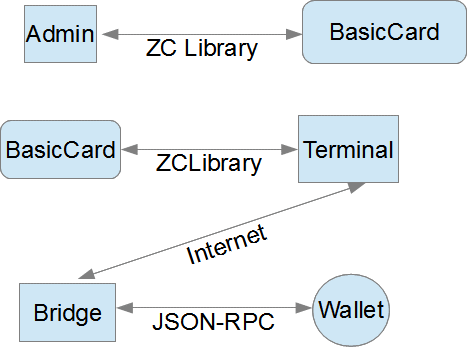

MarleneCard
A BasicCard interface to the bitcoin wallet
Owen Lynn
June 28, 2013
Motivations
Bitcoin has a “last mile” problem, payment systems are rather clunky to use, you need an internet connected smartphone, you need a fair amount of technical savvy to set your smartphone up to be able to make payments, and the merchant on the other end needs to set up a tablet or netbook to output the QR codes that the smartphone needs to take pictures of.
Although smartphones are coming down in cost, the bulk of all cellphones that are in use today globally are “cheap, dumb” phones. And the majority of the world doesn't enjoy the luxury of a ready internet connection wherever they go either.
Smartcards at this time are much cheaper, they can do the same sort of encryption that you expect, and they are very light and fit easily in a physical wallet. They don't need a battery, and only need to connect to the internet upon payment.
Architecture
The MarleneCard payment system consists of four components:
A small bridge server, that takes requests from card terminals and translates that into JSON-RPC commands
A terminal program, that talks to the card and forwards the communication to the bridge
A BasicCard that can encrypt and decrypt commands.
An admin program to configure the card before use “on the street”
Here's a diagram of how they interact with each other:

Building MarleneCard
Requirements:
One computer running a recent version of Windows and another running a recent version Ubuntu. Feel free to run a VM for one or both.
A 7.5 BasicCard that's at least RevB but RevD is preferred. If you can't find a RevD card, RevB should work fine.
A PC/SC reader
Qt Creator 5.0.2 MSVC 2010 32bit. Do NOT build this using the 2012 64bit version, it will fail to link the Zeitcontrol C++ libraries. There's some bug with how Qt drives the MS linker and I don't have the motivation to figure out what is going wrong. This is important, make sure Qt is set up to build using the 2010 toolchain. You can use the 2012 debugging tools if you wish, but the linker has to be 2010.
Qt Creator 5.0.2 for Linux, feel free to pick a version you like. Build was tested on Ubuntu, other linuces might work, but YMMV
Zeitcontrol's C++ terminal library. You want to download the .Net library on their website. You can get it at http://www.basiccard.com/download.htm Install the library to the location that it sets as default.
Zeitcontrol's BasicCard development software. You should be able to get it at the same location that you got the .Net library they offer.
OpenSSL on linux, specifically the -lcrypto library. OpenSSL is also very useful for generating the public/private RSA keypair you'll need for the card and server to understand each other.
A recent version of the Bitcoin wallet, installed on the Linux box.
Building the packages
Building the GUI apps
MarleneAdmin, MarleneLib and MarleneTerminal all need to be built on Windows. In theory they can all be ported to work on other platforms, but none of that porting work has been done. The Zeitcontrol library specifically needs to be replaced. There's an open source version of that library, but I haven't tested it to see how well it works or not. If you want to try, it can be accessed at http://www.chzsoft.de/cms/?Downloads:BasicCard:libbasiccard
Make a directory somewhere on your Windows box, CD to that directory and pull from Github those three projects. You may need to adjust the include directories on your machine so that MarleneAdmin and MarleneTerminal can both access the headers and the library of MarleneLib.
Building on Qt Creator is fairly simple, build MarleneLib first and then build and link MarleneAdmin and MarleneTerminal.
Building the BasicCard project
MarleneCard is the BasicCard project. It too has to be built on Windows, but once it's build and loaded onto the BasicCard, you're done with using Windows in theory. Pull the project from Github and put it somewhere. Point the Zeitcontrol IDE to the MarleneCard.zcp, right click on the card.zcc entry, select “build” and it should output that it's built. Double click on “card.zcc”, select Card → Download to real card and follow the prompts.
Building the Bridge Server
The bridge server in theory can be built on any platform, but you'll probably have the best experience building it on Linux. Make sure that OpenSSL is installed – all the development headers and libraries, make sure git is installed and pull the MarleneBridge project from github onto your linux box somewhere. Open up the .pro file in Qt Creator, and hit build.
Why Marlene?
It's the name of my cat. Everything on the internet is cats.